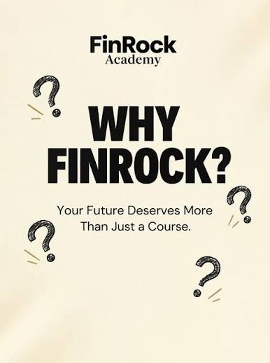

A Forward Deployed Engineering (FDE) course focuses on building
real-world AI-powered solutions by combining programming, It teaches us how to
AI tools, automation, APIs, and software.
understand business problems, develop practical solutions,
integrate AI into applications, and deploy them for real users.
The course helps develop problem-solving, technical, and hands-on
building skills to prepare for careers in AI engineering and automation

| No | Business | Type |
|---|---|---|
| 1 | Restaurant | Traditional |
| 2 | Swiggy | Startup |